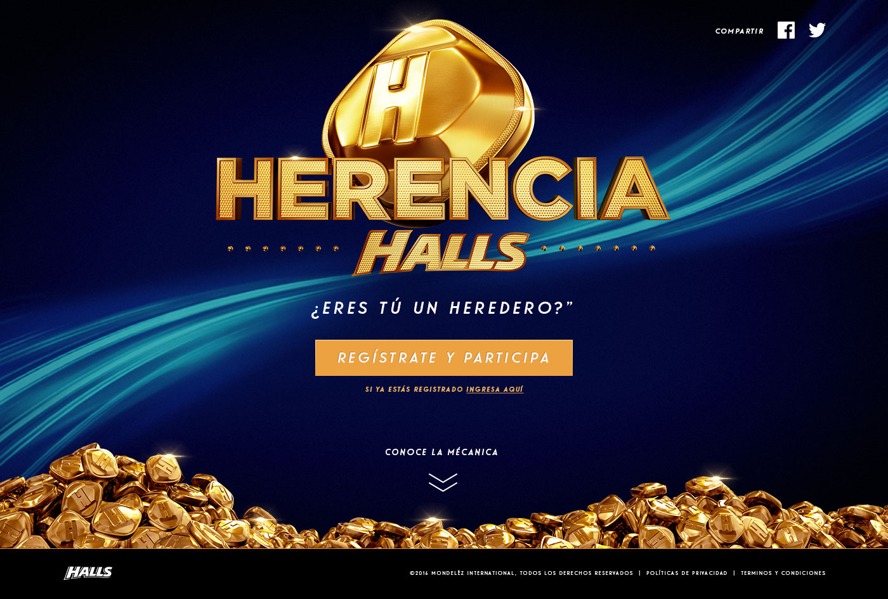
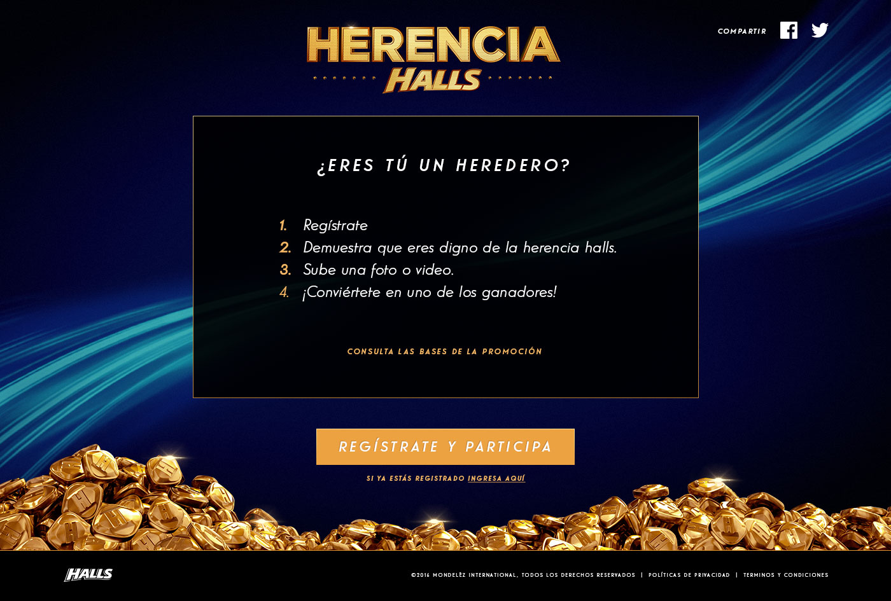
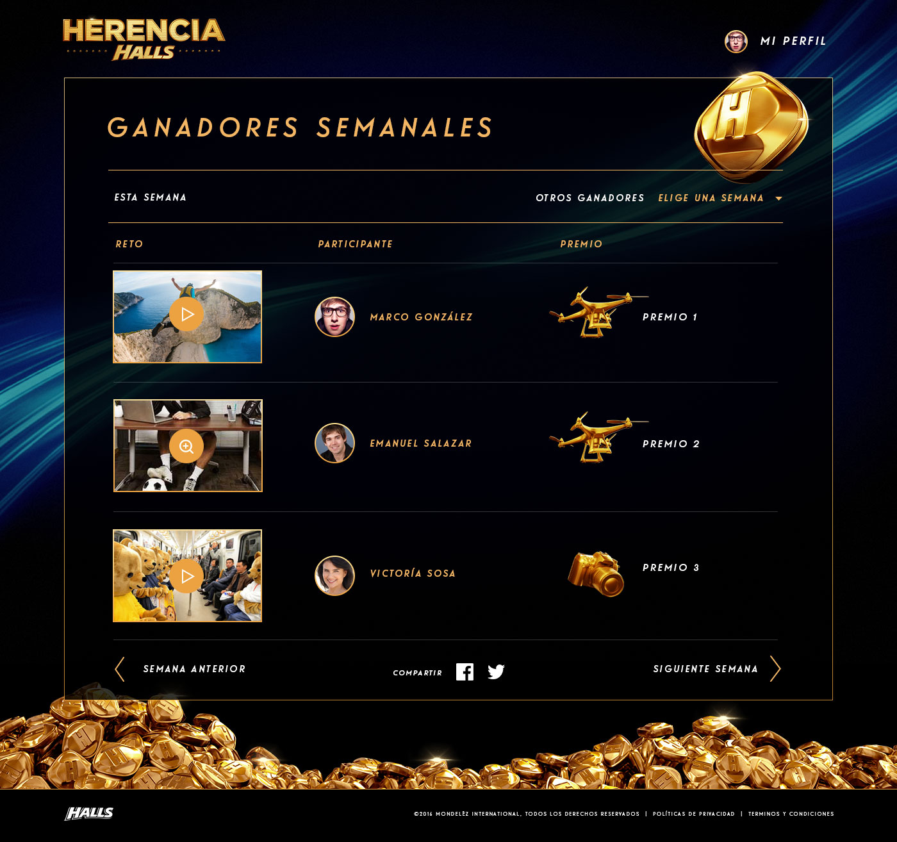

<div class="ajax-get" id="p-scroll">
	<div class="ajax-container">
		<hgroup>
			<h3>Herencia Halls</h3>
			<h4>Front-End, Maquetado</h4>
			<h5><a href="http://www.herenciahalls.mx/" target="_blank">http://www.herenciahalls.mx/</a></h5>
		</hgroup>
		<div class="content">
			<p>Diseñado/Desarrollado en KTBO por el equipo de Desarrollo para Halls y su concurso de Herencia Halls en Latinoamerica. Mi participación fue en el front-end y maquetado del sitio al igual que su adaptación a dispositivos móviles. Las herramientas utilizadas fueron PhpStorm como IDE, Prepros para procesar SCSS y Gulp para minificar y unificar el CSS/JS.</p>
			
			
			
			
		</div>
	</div>
</div>